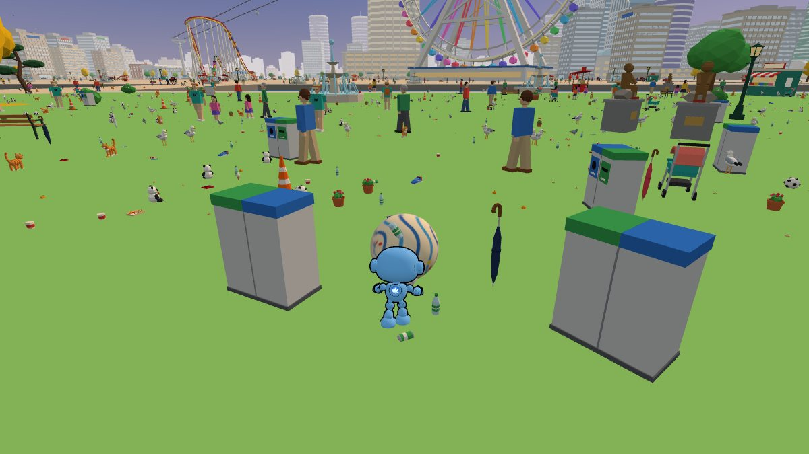

01ハマころ！
ネクマックスが玉を押して、みなとみらいから中華街までを転がし、ぶつかったものを巻き込んで大きくなります。横浜を丸めたら関東、日本、最後は地球ごと。
モード：ストーリー／タイムアタック（5分）／おつかい／ステージをえらぶ。最初は直径 30cm です。
中身
- README：遊び方、ステージ、モード、ファイル構成
js/models：横浜・関東・世界のローポリモデル（すべてコードで生成）js/engine：ステージ生成、描画、当たり判定、3D カードjs/pusher.js：玉を押すネクマックス- プルリクエスト #2：作業の経緯